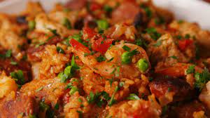

Home Page
Slow-Cooker Paella

Paella made easy!
- Prep: 20 mins
- Cook: 1 hr 40 mins
- Total: 2 hr
- Yield: 6 servings
Ingredients
- 1 tsp. extra-virgin olive oil
- 1 1/2 lb. boneless skinless chicken breasts, cut into 1" pieces
- 1/2 lb. chorizo, sliced
- kosher salt
- Freshly ground black pepper
- 1 c. short-grain rice
- 1 15-oz. can diced tomatoes
- 1 large onion, chopped
- 4 cloves garlic, minced
- 2 tsp. paprika
- Pinch of cayenne pepper
- 2 c. low-sodium chicken broth
- 1/3 c. dry white wine
- 1/2 lb. medium shrimp, peeled and deveined
- 1 1/2 c. frozen peas
- Freshly chopped parsley, for garnish
- Lemon wedges, for serving
DIRECTIONS
-
In a large skillet over medium heat, heat oil. Add chicken to one side
and chorizo to the other. Season chicken with salt and pepper and cook
until golden, 10 minutes. (Remove chorizo if it's getting too burned.)
-
In a large slow-cooker, add browned chicken-chorizo mixture, rice,
tomatoes, onion, garlic, paprika, and cayenne and season with salt and
pepper. Pour over chicken broth and white wine, then stir to combine.
-
Cover and cook on high until rice is almost tender, stirring
occasionally, 1½ to 2 hours.
-
Remove lid and stir in shrimp and frozen peas. Cover and cook until
shrimp is pink and peas warmed through, about 10 minutes more.
- Garnish with parsley and serve with lemon wedges.